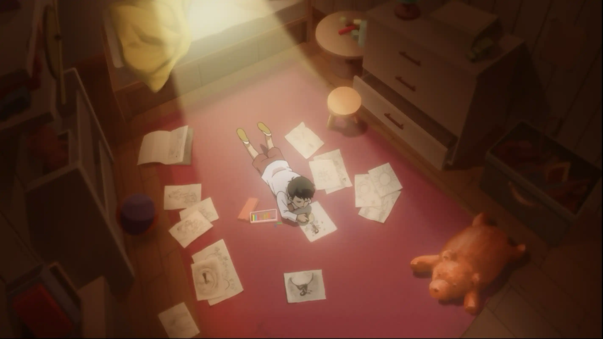
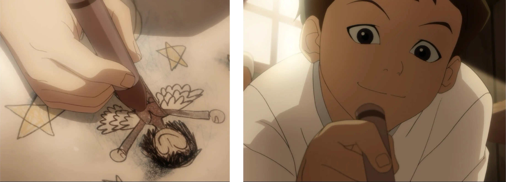
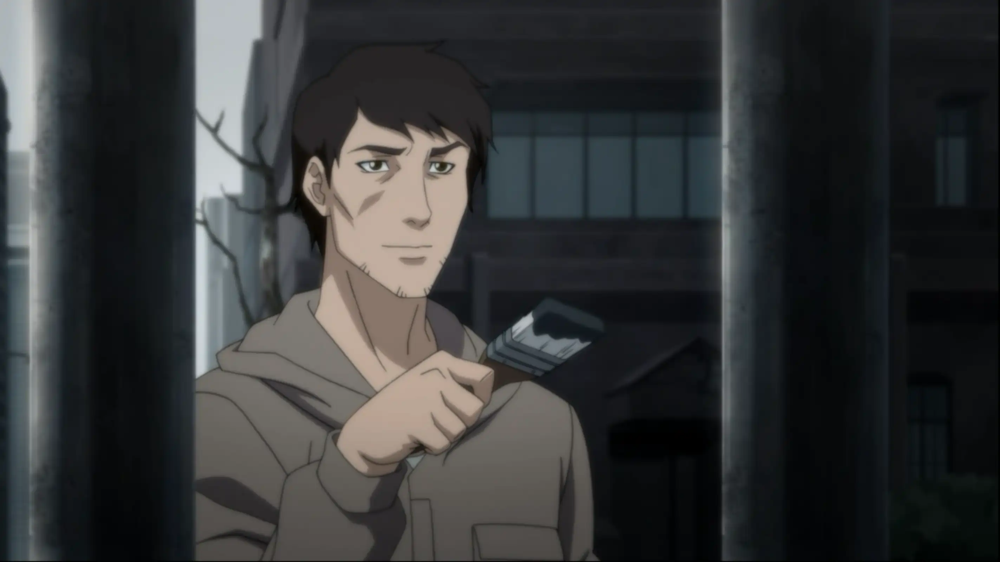
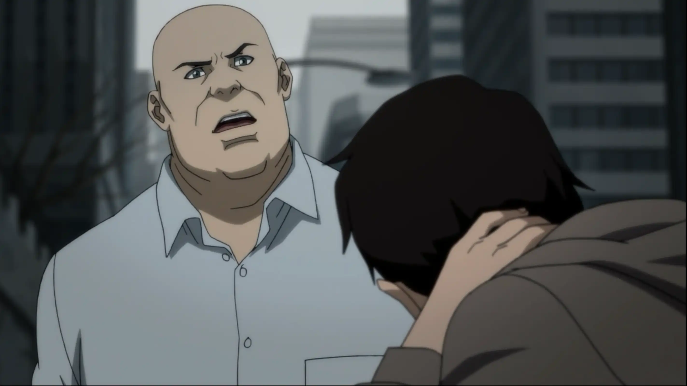
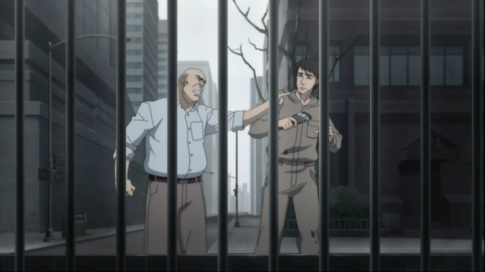
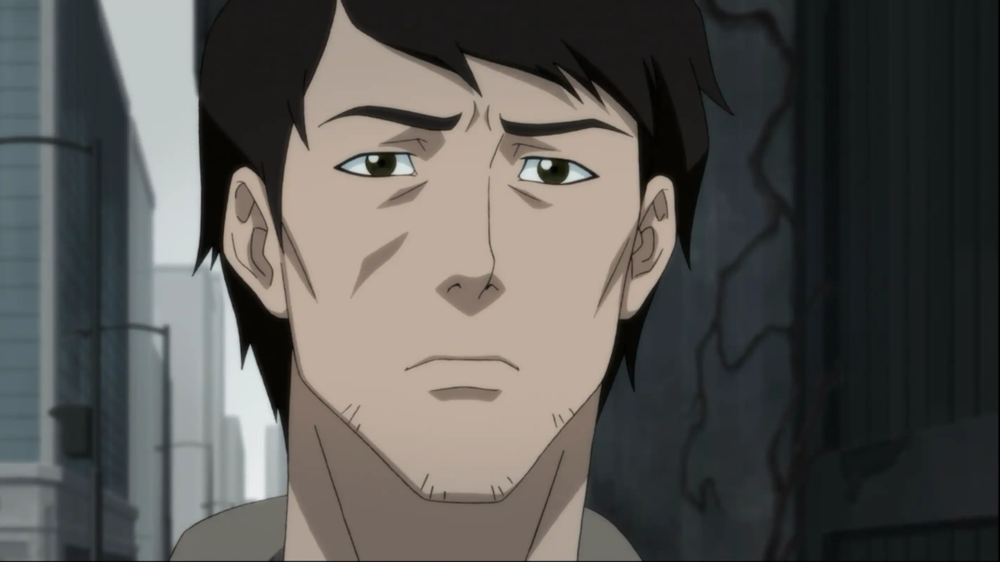
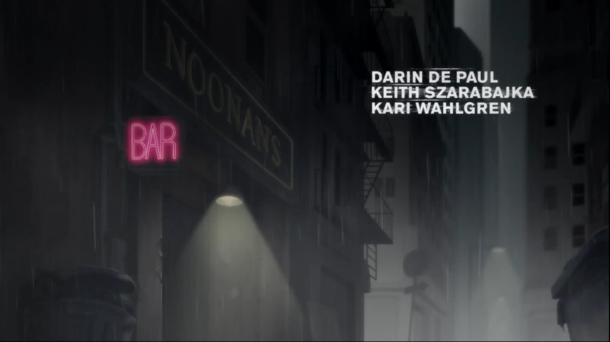
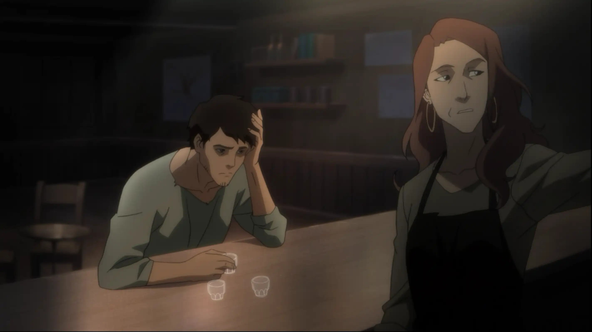
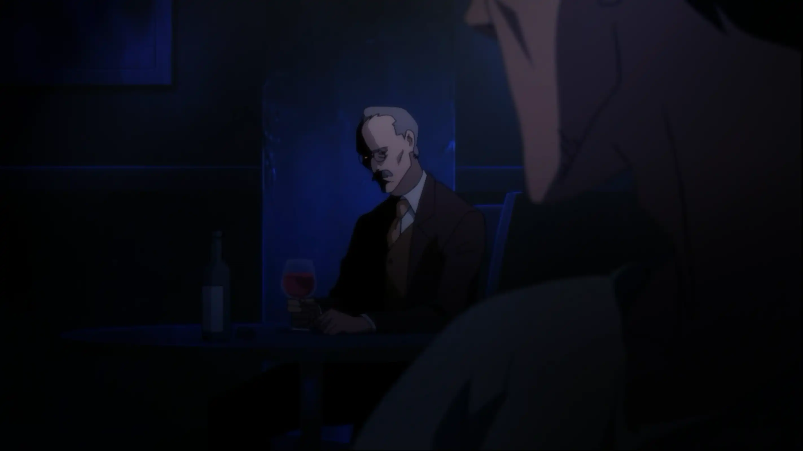
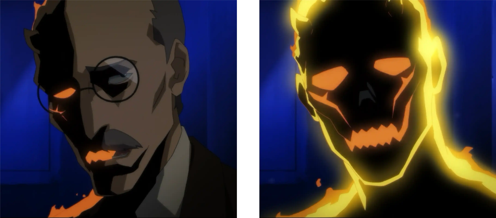

El trazo detenido | Recuerdo
"Algunas líneas nunca terminan, solo cambian de mano."
La historia comienza cuando nuestro protagonista, Vincent, es un niño y está recostado sobre el piso de su habitación.
Lo vemos muy alegre dibujando la figura de un ángel, completamente perdido en el momento.
De pronto, la escena contrasta con su realidad actual.
Vincent se encuentra trabajando, pintando una verja. Parece haber terminado, y lo vemos con una ligera sonrisa.
Cuando, de repente, es reprendido por su jefe por no ser lo suficientemente rápido en su trabajo.
Vincent le responde —una actitud muy propia de él— diciendo que es un artista y no puede cambiar su forma de trabajar. Su jefe se molesta aún más y termina por despedirlo.
Aquí escuchamos una voz que empieza a recriminarle dentro de su mente. Se trata de uno de sus "demonios", mismos que suele ver de manera recurrente.
Más tarde, Vincent llega a un bar en medio de la noche. Afuera, la lluvia cae de forma constante y el lugar parece tan cansado como él.
Ya dentro del bar, vemos que Vincent ha bebido varios tragos y empieza a conversar con la bartender.
De pronto, pierde la concentración al notar a un hombre misterioso sentado detrás de él, quien comienza a criticarlo, diciéndole que solo es un soñador y que no ha logrado nada real.
Ese hombre era su antiguo maestro de pintura, ahora representado como un demonio: uno de los temores más profundos de Vincent.
